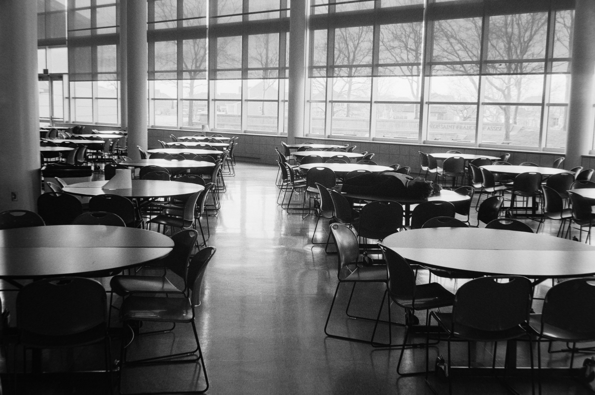

Eating Well on a Student Budget
Your first year is busy: new classes, new friends, and long days on campus. It is easy to skip meals or spend your whole allowancce on milktea.
Eating regular, simple meals help you focus in class, and you do not need a big budget to do it.
Where to Eat Near Campus
You have more options that you think. Here are the usual go-to spots:
- The school canteen for quick rice meals between classes
- Carenderias outside the gate for cheap, filling ulam and rice
- Your own baon from home, which is the cheapest choice of all
- Convenience stores for emergency snacks, not for every meal
How to Plan Your Weekly Food Budget
A little planning on Sunday saves you from being broke by Thursday.
- Check how much allowance you have for the whole week.
- Set aside money for fare and school needs first
- Divide what is left by the number of school days.
- Pack baon at least two days to stretch your budget
- Keep a small amount for emergencies, like a surpise project.
Quick Tips
Always bring a refillable water bottle. Water Stations on campus are free, and you will save a lot compared to buying bottled drinks every day.

Photo by:
Spencer Plouzek on Unsplash
Home
Enrollment Guide